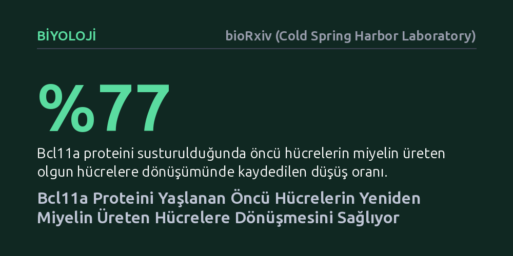

BIYOLOJI · bioRxiv (Cold Spring Harbor Laboratory) · 2026-10-27
Araştırmacılar, yaşlanmayla birlikte sinir kılıfını onarma yeteneğini kaybeden öncü beyin hücrelerini yeniden canlandıracak genetik mekanizmaları inceledi. Yaşlı kemirgenlerde Bcl11a adlı proteinin artırılmasının, bu hücrelerin çoğalma hızını değiştirmeksizin olgunlaşıp hasarlı miyelin tabakasını onarmasını sağladığı gösterildi.
Beyindeki yaşa bağlı onarım yetersizliğinin kalıcı bir tükeniş olmadığını, doğru moleküler anahtarlar uyarıldığında yaşlı hücrelerin onarım potansiyelini yeniden kazanabildiğini gösteriyor.

Beynimizdeki milyarlarca sinir hücresi, elektrik sinyalleri aracılığıyla birbiriyle kesintisiz haberleşir. Bu iletimin hızlı ve kesintisiz gerçekleşebilmesi için sinir lifleri, tıpkı elektrik kablolarını saran plastik yalıtım gibi, miyelin adı verilen yağlı bir koruyucu tabakayla kaplıdır. Merkezi sinir sisteminde miyelin üretiminden sorumlu olan hücreler oligodendrositlerdir. Genç bir organizmada, miyelin hasar gördüğünde veya yeni bir şey öğrenildiğinde, beyinde hazır bekleyen öncü hücreler hızla olgunlaşarak yeni oligodendrositlere dönüşür ve hasarlı kılıfları onarır.
Ancak yaşlanmayla birlikte bu biyolojik tamir mekanizması teklemeye başlar. Yaşlı bireylerde öncü hücrelerin sayısı aslında dramatik şekilde tükenmez; asıl sorun, bu hücrelerin olgunlaşıp miyelin üreten işlevsel hücrelere dönüşme yeteneğini yitirmesidir. Bunun sonucunda miyelin hasarları tamir edilemez, sinirsel iletim yavaşlar ve doku kendini yenileyemez hale gelir. Bilim dünyasının uzun süredir yanıt aradığı kritik soru şuydu: Yaşlanan öncü hücrelerin olgunlaşmasını durduran moleküler kilit nedir ve bu kilit hücresel düzeyde yeniden açılabilir mi?
Araştırmacılar, bu sorunun yanıtını bulmak için öncelikle genç sıçanların beyninden izole edilen öncü hücrelerin olgunlaşma sürecindeki genetik değişimlerini inceledi. Hücrelerin öncü evreden olgun oligodendrosite doğru ilerlerken hangi genleri ne zaman açıp kapattığını izlemek amacıyla kapsamlı gen ifadesi verileri toplandı. Gelişimsel geçişleri geleneksel yöntemlerle incelemek çoğu zaman karmaşık ve dağınık sonuçlar verdiğinden, ekip 'gSWITCH' adını verdikleri yeni bir hesaplamalı yöntem ve web uygulaması geliştirdi.
gSWITCH, hücrelerin kademeli gelişim basamakları boyunca sergilediği gen ifadesi dalgalanmalarını dört temel şalter tipine göre sınıflandırıyor. Yapılan analizler, özellikle gelişim basamağının başında en yüksek seviyede olup olgunlaşmayla azalan 'Tip 3' şalter genlerinin yaşlı öncü hücrelerde belirgin biçimde baskılandığını ortaya koydu. Kromatin veritabanları taranarak bu genleri hangi ana düzenleyicilerin yönettiği araştırıldığında, Bcl11a adlı transkripsiyon faktörü öne çıktı. Genç öncü hücrelerde yoğun olarak üretilen ancak olgunlaşma sırasında kademeli azalan Bcl11a'nın, yaşlı hücrelerde erkenden çok düşük seviyelere gerilediği belirlendi.
Ekip, Bcl11a'nın gerçekten bir gelişim anahtarı olup olmadığını anlamak için ilk olarak genç öncü hücrelerde bu geni susturdu. Bcl11a seviyesi yaklaşık yüzde 79 oranında düşürüldüğünde, hücrelerin çoğalma hızında bir değişiklik olmadı; ancak olgun oligodendrositlere dönüşme oranları yaklaşık yüzde 77 gibi çarpıcı bir düşüş gösterdi. Bu bulgu, Bcl11a'nın öncü hücreleri farklılaşmaya hazırlayan vazgeçilmez bir biyolojik öncül olduğunu kanıtladı.
Ardından asıl kritik adıma geçildi: Yaşlı hücrelerde azalan Bcl11a seviyesi dışarıdan geri verilirse ne olurdu? 20-24 aylık yaşlı sıçanlardan toplanan öncü hücrelere laboratuvar ortamında sentetik Bcl11a haberci RNA'sı aktarıldı. Sonuçlar dikkat çekiciydi: Bcl11a verilen yaşlı hücreler, kontrol grubuna kıyasla yüzde 54 daha fazla olgun oligodendrosit üretti. Başka bir deyişle, yaşlı hücrelerin körelmiş gibi görünen olgunlaşma potansiyeli yeniden harekete geçirildi.
Bu etkinin canlı organizmadaki karşılığını görmek isteyen araştırmacılar, 18 aylık yaşlı farelerin omuriliğinde kimyasal yöntemle yerel miyelin hasarı oluşturdu. Hasardan bir ay önce zararsız bir virüs taşıyıcısıyla öncü hücrelerine Bcl11a geni aktarılan yaşlı fareler incelendiğinde, hasar bölgesine toplanan öncü hücrelerin olgunlaşma belirteçlerini yeniden üretmeye başladığı gözlendi. Bcl11a desteği alan yaşlı farelerde, miyelin üretiminin son aşamasını işaret eden olgun hücre sayısının anlamlı düzeyde arttığı doğrulandı.
Çalışmanın bir diğer çarpıcı yönü ise evrimsel analizler oldu. İnsan dahil 23 farklı omurgalı türünün genetik dizilimlerini inceleyen araştırmacılar, Bcl11a geninin omurgasızlarda bulunmadığını ancak tüm omurgalılarda 'arındırıcı seçilim' yoluyla amino asit dizilimini milyonlarca yıldır titizlikle koruduğunu saptadı. Bu durum, Bcl11a'nın rastgele bir gen değil, gelişmiş sinir sistemine sahip canlıların sinir yalıtımını ve hücresel geçişlerini güvenceye alan hayati bir evrimsel miras olduğunu gösteriyor.
Bu bulgular, yaşlanan beyin hücrelerindeki işlev kaybının tamamen geri döndürülemez bir çöküş olmadığını; aksine hücrelerin içsel olarak uykuda bekleyen bir programa sahip olduğunu düşündürüyor. Hücrelerin kapattığı bu anahtar genler yeniden uyarıldığında, doku onarım kapasitesi belirgin şekilde canlanabiliyor. Yine de araştırmacılar temkini elden bırakmıyor: Bcl11a artırımı öncü hücrelerin sayısını çoğaltmıyor, yalnızca var olan hücrelerin olgunlaşma yeteneğini geri kazandırıyor. Yaşlanmanın getirdiği bağışıklık sorunları ve doku sertleşmesi gibi diğer karmaşık etkenleri tek bir genle çözmek mümkün değil; ancak bu çalışma, multipl skleroz gibi miyelin kaybıyla seyreden hastalıklara karşı geliştirilecek hedefe yönelik tedaviler için somut bir moleküler basamak sunuyor.